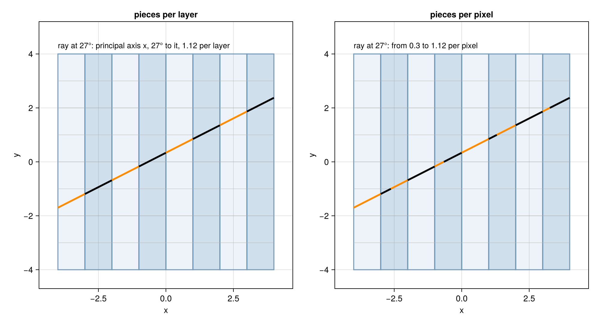

System Matrix
Every projector of this package is a linear map from an image to projection data: a matrix $A$ with
\[y = A x, \qquad y_i = \sum_j a_{ij} x_j.\]
This page describes what the rows, columns and entries of this matrix are, what all projectors have in common, and the two choices in which they differ. The pages on the methods describe how each of them computes the entries.
using CTOperatorsRows, columns and weights
- A column belongs to a voxel of the image; $x_j$ is its value.
- A row belongs to a data element, one number of the projection data: one detector cell in one view, or one ray of a
RayList; $y_i$ is its value. - The entry $a_{ij}$, the weight of voxel $j$ in data element $i$, says how much the voxel contributes to the data element.
The matrix is not stored. With a 256³ volume and 10⁷ data elements, each touching a few hundred voxels, it has billions of nonzero entries, tens of gigabytes. The projectors compute the weights of a data element whenever they need them: one thread per data element computes its row, uses it and discards it, in every application of the operator.
Back projection and adjoint
The back projection applies the transpose, $x = A^T y$: every data element adds its value, times its weights, to the voxels of its row. The projectors compute the same rows for it as for the forward projection, so the back projection is the exact adjoint of the forward projection: for all images $x$ and data $y$, $\langle A x, y \rangle = \langle x, A^T y \rangle$, up to rounding. Threads of different data elements add into the same voxels, so the additions are atomic; on a GPU they run in no fixed order, and the last digits of a back projection can differ from call to call. The voxel-driven projector, which computes columns, has it the other way round: its back projection writes each voxel once, and its forward projection adds into the data with atomic additions.
Two sums of the matrix appear in reconstruction methods:
- the row sums $A \mathbf{1}$ (
rowsums), per data element the sum of its weights; for Siddon's method the length of the ray inside the image; - the column sums $A^T \mathbf{1}$ (
colsums), per voxel the summed weights of all data elements (the sensitivity image of OS-EM). Scaled so that an even distribution is 1, they are called coverage on these pages.
Image model and detector model
What a weight means follows from two choices: what the voxel values describe (the image model) and what a data element measures (the detector model).
| method | image model | detector model |
|---|---|---|
| Siddon's Method | constant within each voxel | the line integral along one ray, through the center of the cell |
| Joseph's Method | interpolated linearly between the voxel centers, within each layer (below) | the line integral along one ray, through the center of the cell |
| Several Rays per Cell | that of the method used | the mean of the line integrals along several rays of the cell |
| Distance-Driven Method | constant within each voxel, on the center plane of each layer | the mean over the area the cell sees, per layer |
| Voxel-Driven Method | a point mass at the center of each voxel | the mean of the line integrals over the cell, each point mass spread over the 2 × 2 nearest cells by bilinear interpolation |
The first two are ray-driven: a data element is one ray, a line without width. The voxel-driven method computes the matrix by columns: one thread per voxel finds the cells that see it.
Layers and the principal axis
Joseph's method and the distance-driven method cut the image into layers:
- The principal axis of a ray is the axis along which it advances most, counted in voxels.
- A layer is the set of voxels with the same index along the principal axis: a row or column of pixels in 2D, a plane of voxels in 3D.
- The center plane of a layer runs through the centers of its voxels; in 2D it is a line, the center line.
- The length per layer is the length of the ray in a layer.
A layer is a slab between two parallel planes perpendicular to the principal axis $k$, a voxel size $\Delta_k$ apart. A ray that runs from one of these planes to the other crosses the layer completely. Moving a distance $s$ along the ray advances it $s \, |\cos \theta_k|$ along $k$, where $\theta_k$ is the angle between the ray and that axis; to advance $\Delta_k$ it needs
\[s = \frac{\Delta_k}{|\cos \theta_k|}.\]
The angle is the same all along a straight ray, so every layer it crosses completely gets this length. For cubic voxels the angle is at most 45° in 2D and about 54.7° in 3D, since the ray advances most along $k$, so the length per layer is at most $\sqrt{2}$ (2D) or $\sqrt{3}$ (3D) times the voxel size. A ray crosses a layer only partly where it starts or ends inside it, which happens for segments with end points inside the image.
The length per layer is not the length of the ray in a voxel. A layer contains a row of voxels across the principal axis, and where the ray crosses a boundary between two of them inside the layer, the piece of the layer is split between the two voxels. Only together do the voxels of a layer get the length per layer, and only the part of the piece inside the image falls on voxels.
The figure shows one ray through an image of 8 × 8 pixels, slightly off the center, cut into its pieces per layer: the layers along the principal axis are shaded alternately, and the pieces between the layer planes alternate in color; they all have the length per layer. Dashed: parts of the ray outside the image. The slider turns the ray in steps of 9°: at 45° and at 135° the principal axis changes, and there the length per layer is largest, $\sqrt{2}$.
The pieces per voxel are different. The next figure shows the same ray at 27°, left again cut into its pieces per layer, right into its pieces per pixel, between all pixel boundaries of both axes, as Siddon's method uses them. Where the ray crosses a boundary between two pixels of the same layer, a piece of the left panel is split in two on the right, so the pieces per pixel vary in length, while the pieces per layer do not.

Joseph's method chooses the principal axis per ray, the distance-driven method once per view, for all cells of the view. Siddon's method does not use layers: it follows the crossings of the ray with the boundaries between all voxels.
This page was generated using Literate.jl.